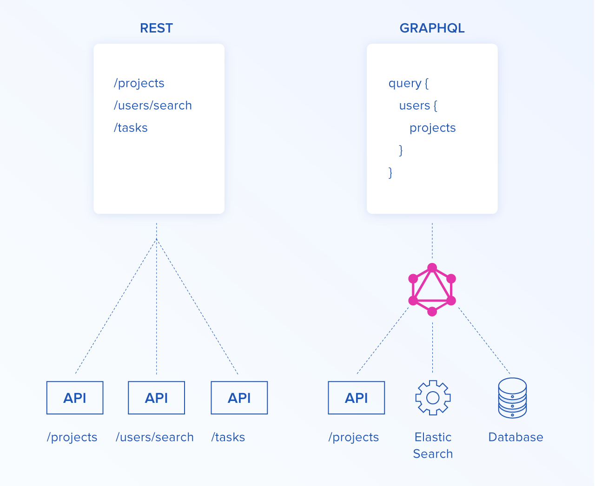
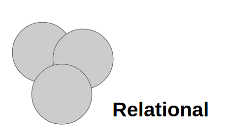
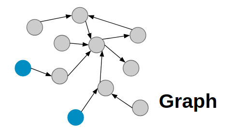
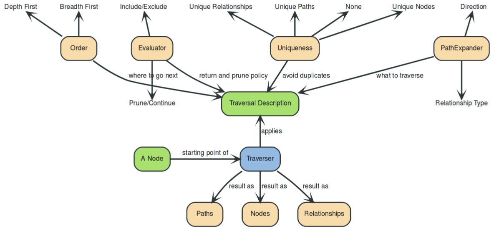

Libérer la puissance des graphes avec GraphQL et Neo4j
Les graphes
Benoit Simard

Dépendant aux graphes
Libérateur de données
Développeur Web
Consultant chez Neo4j
7 ponts de Königsberg
A la base de théorie des graphes par Léonard Euler au 18e
Outil de modélisation
La modélisation en graphe est ultra intuitive

Outil mathématique et informatique
On utilise du graphe tous les jours
File System
GPS - chemin le plus court
Moteur de recherche - Page Rank
La recommandation : filtrage collaboratif
Les indexes en base de données - Binary Search Trees
Big Data : DisinfoLab sur Benalla avec la détection de communautés
Les graphes sont partout
GraphQL
Qu’est ce que c’est ?
GraphQL est une spécification de langage
Un langage de requête pour vos APIS

Développer par Facebook (iOS team)
Langage déclaratif, où vous définissez les champs que vous souhaitez
Auto-documenté (basé sur un schéma typé)
Alternative à REST
Une large adoption / communauté

Quelques extraits de la documentation
“A query language for your API, and a server-side runtime for executing queries by using a type system you define for your data”
“GraphQL isn’t tied to any specific database or storage engine”
“A GraphQL service is created by defining types and fields on those types, then providing resolver functions for each field on each type”

Prenons un exemple
Requête
Résultat
It’s a Graph !

Votre modèle est un graphe
Schema Definition Language
Type : La définition de votre modèle
Query : La liste des fonctions disponibles pour la lecture
Mutations : La liste des fonctions disponibles pour l’écriture
Type
Movie
Actor
Queries / Mutation
Movie
Actor
Resolvers
C’est une fonction où vous codez comment récupérer la donnée
obj : Le résultat de l’objet parent. Dans le cas de la recommandation, ce sera l’objet film.
params : La liste des arguments passée aux fonctions.
context : Objet partagé par tous les resolvers d’une même requête
resolverInfo : Réservé pour les usages avancés
Pourquoi GraphQL ?
Il existe déja REST non ?

Typage des éléments
C’est un langage de requête : vous définissez le retour que vous souhaitez !
Une seule requête au lieu de X : le modèle est un graphe et vos requêtes aussi
Un petit goût de savon ?
GraphQL et SOAP
Tout est fait en POST dans un body sur un unique endpoint
Tout est défini dans un schéma faisant l’interface entre le client/serveur
Le système de typage est fort
MAIS :
pas de XML
facile à implémenter
focaliser sur les données (non service)
agnostique sur la technologie
Les problèmes liés a GraphQL
Les 5 problèmes de GraphQL
de Sacha Greif.
Duplication du schéma
Explication
Namely, you need one schema for your database, and another one for your GraphQL endpoint.
Your database and GraphQL API will have different schemas, which translate into different document shapes.
Un schema pour la base
Un schéma pour GraphQL
Une fonction de transformation
Et si on les fusionne ?
Il faut une base qui gère le modèle de GraphQL
Les bases relationnelles et graphes
Un Graphe de propriétés

Noeuds
Les entités du model
Peuvent avoir des
labelsPeuvent avoir des
propriétés
Relations
Lient deux noeuds entre eux, avec une
directionet untypePeuvent avoir des
propriétés
neo4j et graphql
Première règle de GraphQL : tout commence et finit par le schéma !
Permet de gérer toutes les données de la base, grâce a la définition d’un schéma GraphQL (auto-généré ou fourni).
Exemple de schéma
La magie - les queries
Neo4j génère automatiquement les queries
Movie(movieId, title, released, …, first, offset, _id, orderBy, filter): [Movie]
Tous les champs du type sont définis dans la query, pour un controle d’égalité
filtervous permet de réaliser des filtres plus complexesorderBypour trier vos résultatsfirst&offsetpour la pagination
La magie - les mutations
Neo4j génère automatiquement les mutations
vous pouvez aussi surcharger leurs comportements
Beaucoup de code pour pas grand chose …
This is by no means an issue exclusive to GraphQL apps, but it’s true that they generally require you to write a lot of similar boilerplate code.

Des performances au rabais
Explication
On one hand you want to take full advantage of GraphQL’s graph traversal features (“show me the authors of the comments of the author of the post of…” etc.). But on the other hand, you don’t want your app to become slow and unresponsive.
GraphQL
SQL
Désolé j’ai pas assez de place pour les jointures :)
Killer feature de GraphQl
Au sens propre et figuré
Le paradigme des bases de données graphe


Les traversés en graphe

C’est un peu barbar mais il y a plus simple, attendez un peu :)
Des requêtes en nombres et parfois inutiles
Explication
Imagine a list of posts, each of which has a user attached to it. You now want to display 10 of these posts, along with the name of their author.
Une requête pour avoir la liste des
postsUne requête par
postpour récupérer les auteurs
Cette unique requête GraphQL fait 11 appels à la base !!!
Une solution ?
Batche les requêtes et met en place un système de cache sur les objets basés sur leurs ID.
Et si on pouvait générer qu’une seule requête ?
Et laisser la base se débrouiller toute seule, c’est son job non ?
Une requête en Cypher
Cypher
SQL du Graph
Langage déclaratif
Développer par Neo4j en 2013
open-source depuis 2016 (opencypher)
Implémenter dans Neo4j, SAP Hana, Redis, AgensGraph, …
Est en cours standardisation (https://gql.today/)
Cypher - une histoire pattern

Cypher - ASCIIART
Cypher - Example
Cypher - GraphQL
Same, same … but different
GraphQL
Cypher
GRAND Stack
GRAND Stack
Apollo
“A set of tools designed to leverage GraphQL and work together to create a great workflow”
Client-side tooling
Intégration avec les framework frontend
Politique de cache
Génération de code
Server-side tooling
Création du schema avec ses resolvers
Mocking
Monitoring
Architecture
Kit de démarrage
Merci
Des questions ?